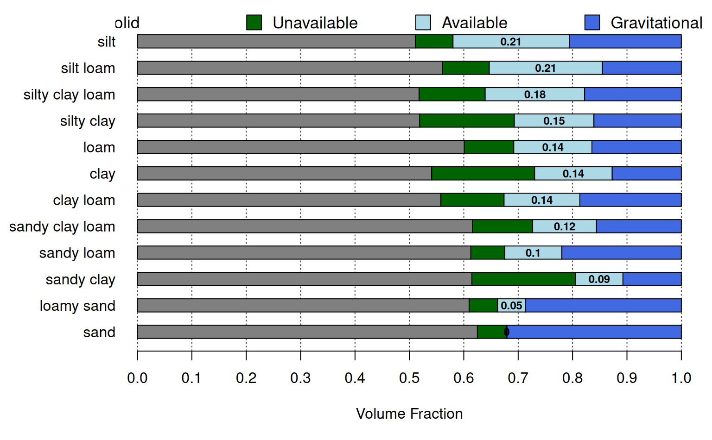
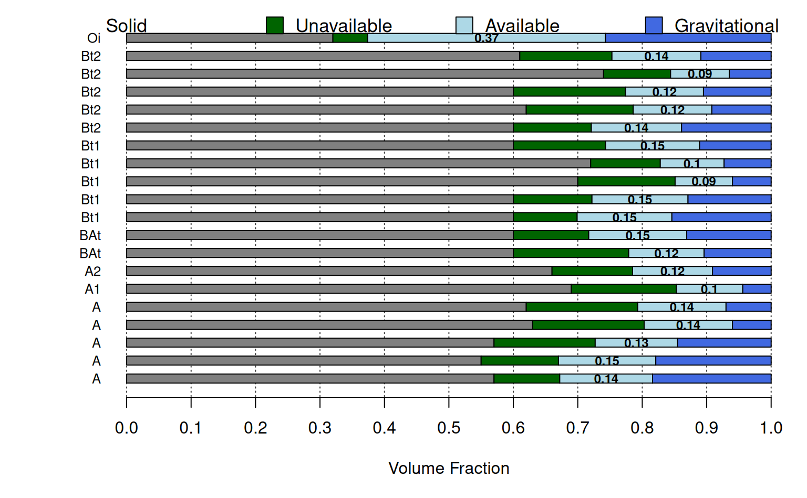

Generate a simplistic diagram of the various fractions of water held within soil pore-space. Largely inspired by Figure 2 from O'Geen (2013).
a data.frame containing sample names and water retention data, see examples below
vertical width of each bar graph
a vector of colors used to symbolize 'solid phase', 'unavailable water', 'available water', and 'gravitational water'
character scaling of horizon names, printed on left-hand side of figure
logical, annotate AWC
nothing, function is called to generate graphical output
O'Geen, A. T. (2013) Soil Water Dynamics. Nature Education Knowledge 4(5):9.
# demonstration
s <- data.frame(
name = c('loamy sand', 'sandy loam', 'silt loam', 'clay loam'),
pwp = c(0.05, 0.1, 0.18, 0.2),
fc = c(0.1, 0.2, 0.38, 0.35),
sat = c(0.25, 0.3, 0.45, 0.4))
s$solid <- with(s, 1-sat)
par(mar=c(5, 6, 0.5, 0.5))
plotAvailWater(s, name.cex=1.25)
# \donttest{
if(requireNamespace("aqp")) {
# demonstration using idealized AWC by soil texture
data("ROSETTA.centroids", package = "aqp")
# subset columns
x <- ROSETTA.centroids[, c('texture', 'pwp', 'fc', 'sat', 'awc')]
# adjust to expected names / additional data required by plotAvailWater
names(x)[1] <- 'name'
x$solid <- with(x, 1 - sat)
# re-order based on approximate AWC
x <- x[order(x$awc), ]
op <- par(no.readonly = TRUE)
par(mar=c(5, 6.5, 0.5, 0.5))
plotAvailWater(x, name.cex = 1)
par(op)
}

# use some real data from SSURGO
if(requireNamespace("curl") &&
requireNamespace("httr") &&
curl::has_internet() &&
require("soilDB")) {
q <- "SELECT hzdept_r as hztop, hzdepb_r as hzbottom,
hzname as name, wsatiated_r/100.0 as sat,
wthirdbar_r/100.0 as fc, wfifteenbar_r/100.0 as pwp, awc_r as awc
FROM chorizon
WHERE cokey IN (SELECT cokey from component where compname = 'dunstone')
AND wsatiated_r IS NOT NULL
ORDER BY cokey, hzdept_r ASC;"
x <- SDA_query(q)
x <- unique(x)
x <- x[order(x$name), ]
x$solid <- with(x, 1-sat)
op <- par(no.readonly = TRUE)
par(mar=c(5, 5, 0.5, 0.5))
plotAvailWater(x)
par(op)
}
#> Loading required namespace: httr
#> single result set, returning a data.frame

# }